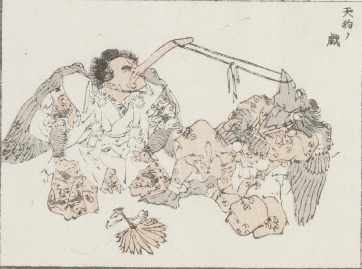

天狗；テング，烏天狗；カラステング

鼻の長い赤い顔の天狗と、嘴のある鳥のような顔をした天狗が、それぞれ鼻と嘴で輪にした紐でひっぱりあっている。両者はともに鈴懸をまとい座っている。
著作者：牧墨僊／出典：親書誌：U426_nichibunken_0097：滑稽洒落狂画苑；コッケイシャレキョウガエン／日付：2007／資源識別子：U426_nichibunken_0097_0030_0000
Copyright (c)2010- International Research Center for Japanese Studies, Kyoto, Japan. All rights reserved.